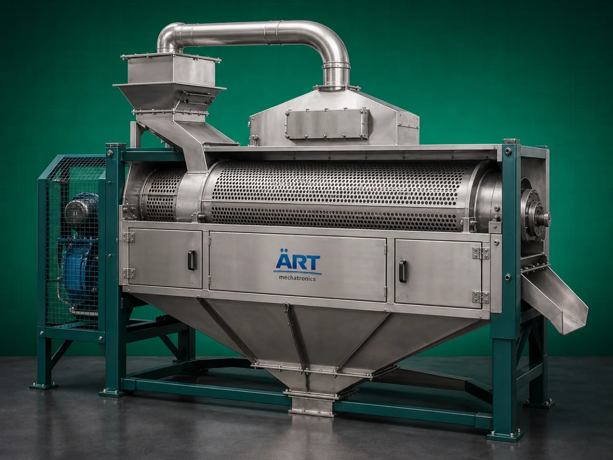

Pre Cleaner Machine (Industrial Grain, Seed & Agro Product Cleaning System)
A Pre Cleaner Machine, also known as an Industrial Grain Pre Cleaner or Seed Cleaning Machine, is an essential processing equipment designed for removing dust, husk, straw, stones, oversized particles, lightweight impurities, and foreign materials from grains, seeds, pulses, spices, and agro products before further processing.

About the Pre Cleaner Machine
The machine acts as the first-stage cleaning system in industrial processing lines, helping improve:
- Product purity
- Processing efficiency
- Equipment protection
- Product quality
- Storage life
Pre cleaner machines are widely used in industries such as:
• Grain processing
• Rice mills
• Flour mills
• Pulses processing
• Seed processing
• Spice industries
• Food processing plants
• Agro product industries
where efficient impurity removal and high-capacity pre-cleaning are critical.
The machine operates using a combination of:
- Vibratory screening
- Air aspiration
- Size separation
- Dust extraction
to efficiently separate unwanted materials from the main product stream.
ART Mechatronics offers high-performance pre cleaner machines, engineered for high cleaning efficiency, continuous operation, energy-saving performance, and reliable industrial processing.
One machine, many names
Buyers search for this equipment under many terms — we manufacture all of them:
Working Principle of Pre Cleaner Machine
Ensures efficient size-based cleaning
Types of Pre Cleaner Machines
Industries Using Pre Cleaner Machine
🌾 Grain Processing Industry
- Wheat, rice, maize cleaning
🌱 Seed Processing Industry
- Seed grading and cleaning
🍃 Pulses Processing Industry
- Dal and pulse cleaning
🌶️ Spice Industry
- Spice impurity removal
🍚 Flour Mill Industry
- Raw material cleaning before milling
🐄 Feed Industry
- Animal feed raw material cleaning
🍃 Food Processing Industry
- Bulk ingredient cleaning
Features & Advantages
- Efficient removal of impurities and dust
- Improves product quality and purity
- Protects downstream processing equipment
- High-capacity continuous operation
- Multi-stage cleaning system
- Energy-efficient performance
- Heavy-duty industrial construction
- Low maintenance requirement
- Suitable for multiple agro products
Technical Highlights
- Capacity: Small to large industrial throughput
- Cleaning Type:
- Vibratory screening
- Air aspiration
- Size separation
- Construction: Stainless Steel / Mild Steel
- Screen Arrangement: Multi-layer screen system
- Dust Control: Integrated aspiration system
- Operation: Manual / Automatic / PLC-based
Turnkey Cleaning Solutions
ART Mechatronics offers:
- Complete pre cleaning plant design
- Dust collection integration
- Conveying and material handling systems
- Multi-stage cleaning solutions
- Installation & commissioning
- After-sales service & AMC
Why Choose Art Mechatronics
- Expertise in industrial cleaning and separation systems
- Customized solutions for agro and food industries
- High-performance and durable machine construction
- Energy-efficient and reliable designs
- Proven industrial performance across sectors
Applications
- Grain Processing Plants
- Seed Processing Units
- Flour Mills
- Pulse Processing Industries
- Spice Manufacturing Plants
- Feed Processing Facilities
Industries that use the Pre Cleaner Machine
Related Cleaning, Sorting & Grading machines
Get pricing & specs for the Pre Cleaner Machine
Share the product, target capacity, current process and plant location. These details help our engineers discuss the right machine or line configuration.
One partner, from design to start-up
ART Mechatronics designs, manufactures, installs and commissions your Pre Cleaner Machine solution with regional presence in India, UAE and Thailand.